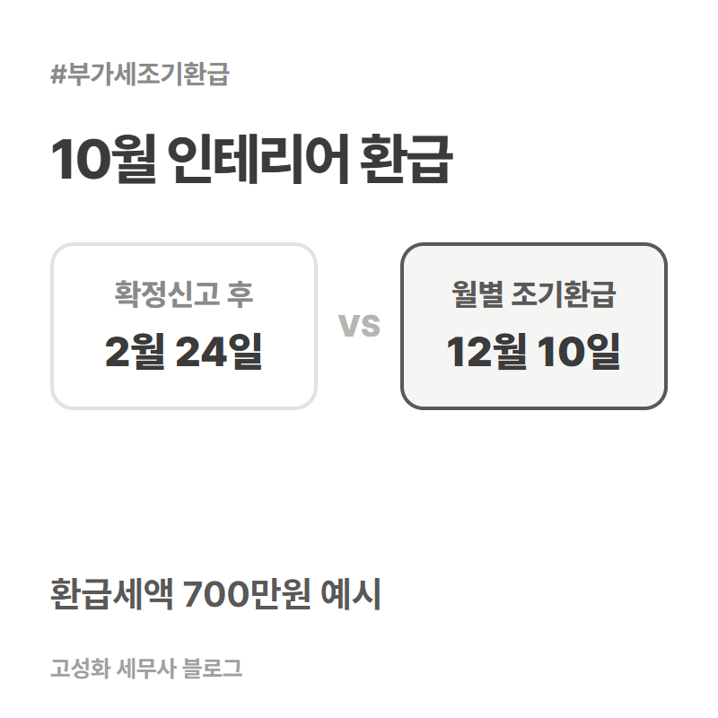
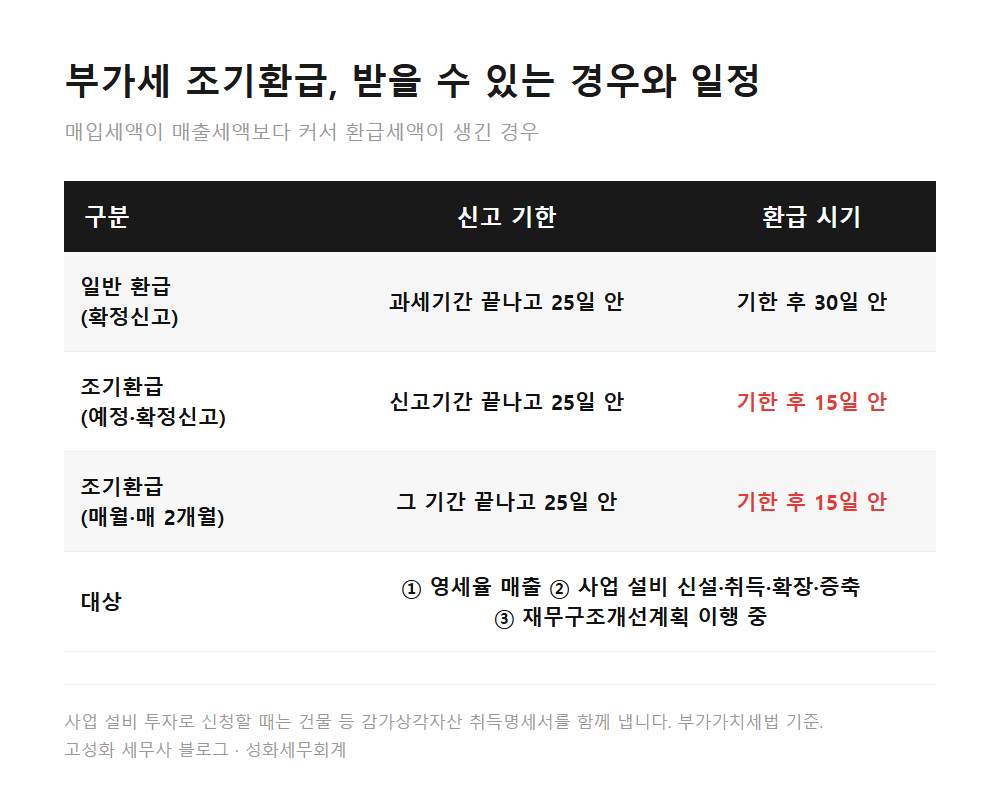
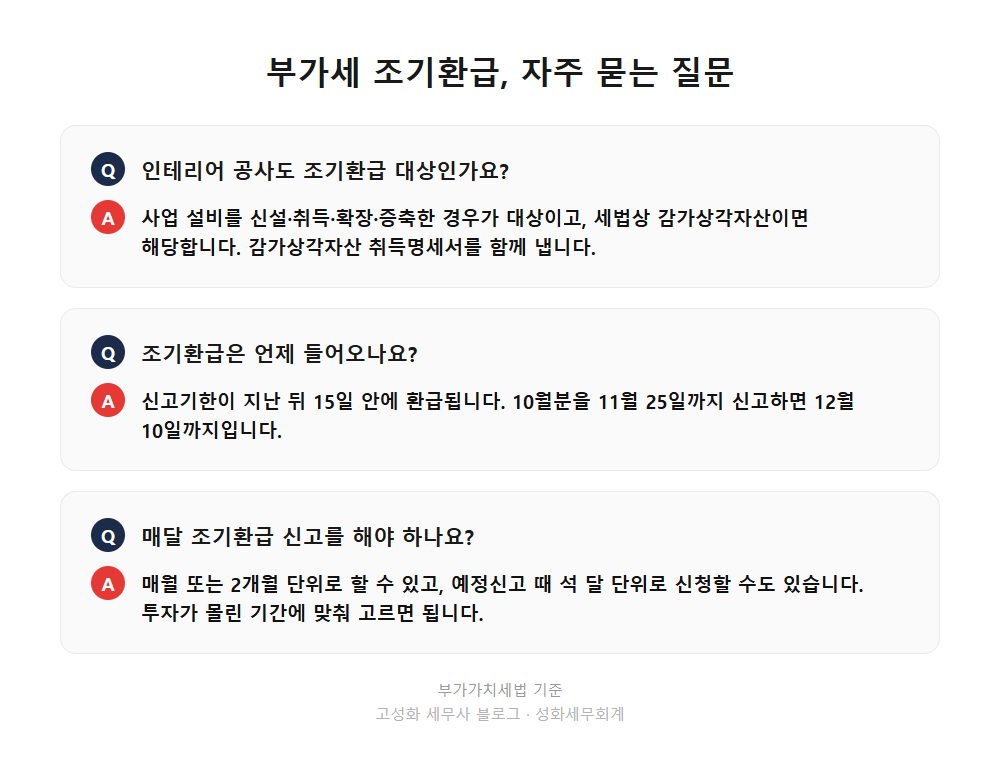

인테리어 부가세 조기환급 월별 신고 기한과 서류 3편

인테리어 공사처럼 사업 설비에 돈을 써서 매입세액이 매출세액보다 커졌다면, 확정신고까지 기다리지 않고 부가세 조기환급을 신청할 수 있습니다. 공사한 달을 하나의 조기환급기간으로 잡아 그달이 끝난 날부터 25일 안에 신고하면, 신고기한이 지난 뒤 15일 안에 환급됩니다. 10월에 공사를 마쳤다면 11월 25일까지 신고하고 12월 10일까지 돌려받는 일정입니다.
이 글을 보고 계신 분은 ① 매장이나 사무실 인테리어를 막 끝낸 개인사업자 ② 기계·설비를 들여 매입세액이 크게 잡힌 법인 대표님 ③ 수출이 많아 매번 환급이 나오는 사업자일 겁니다.
지난 1편에서는 누가 예정신고를 하고 누가 고지서만 받는지, 2편에서는 매출이 3분의 1 아래로 줄면 고지 대신 직접 신고할 수 있다는 내용을 다뤘습니다. 이번 편은 돈을 내는 쪽이 아니라 돌려받는 쪽 이야기입니다.
- 부가세 조기환급, 받을 수 있는 세 가지 경우
- 인테리어 1억원, 숫자로 넣어보면
- 조기환급 신고할 때 실무에서 놓치는 것
한눈에 보기



자주 묻는 질문
인테리어 공사도 조기환급 대상인가요?
사업 설비를 신설·취득·확장·증축한 경우가 대상이고, 세법상 감가상각자산이면 해당합니다. 신고할 때 감가상각자산 취득명세서를 함께 냅니다.
조기환급은 언제 들어오나요?
조기환급신고기한이 지난 뒤 15일 안에 환급됩니다. 10월분을 11월 25일까지 신고하면 12월 10일까지입니다.
매달 조기환급 신고를 해야 하나요?
매월 또는 2개월 단위로 할 수 있고, 예정신고 때 석 달 단위로 신청할 수도 있습니다. 투자가 몰린 기간에 맞춰 고르면 됩니다.
정리하면
부가세 조기환급은 영세율 매출, 사업 설비 투자, 재무구조개선계획 이행 중 하나에 해당할 때 받을 수 있습니다. 인테리어 공사가 있었던 달을 조기환급기간으로 잡아 25일 안에 신고하면 15일 안에 환급되고, 확정신고까지 기다릴 때보다 두 달 넘게 빨라집니다.
다만 세금계산서 날짜, 첨부서류, 그 기간의 다른 매출·매입까지 맞물려 있어 내 경우 어느 달로 신고하는 게 맞는지는 자료를 놓고 봐야 정확합니다. 어디부터 설명해야 할지 막막하시다면 공사 세금계산서와 카드 내역만 보내주셔도 됩니다.
세 편에 걸쳐 10월 부가세를 정리했습니다. 1편은 신고와 고지 대상, 2편은 매출이 줄었을 때 직접 신고로 바꾸는 법, 이번 3편은 투자가 있었을 때 환급을 앞당기는 법이었습니다.
본문 전체와 근거 조문은 블로그에서 확인하실 수 있습니다.